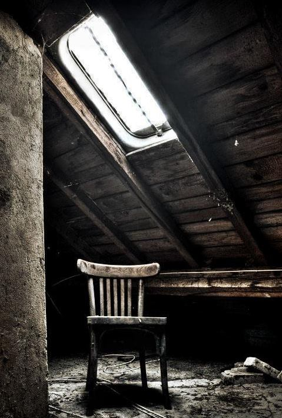

Hello, world! I'm a 21 year old college guy who is currently doing B.Tech in Computer Science and Engineering.
I enjoy computer programming, writing CSS and doing projects, specially on web and operating system. Some of my works are available on Behance.
You can find me on Github. Contact me at deb.dbuniversity@gmail.com.
I love minimalism and occasionally blog here.

Mini OS is a Bare Bone Operating System written in C and Assembly which could be loaded with the GRUB bootloader on an x86 system. The purpose of this project is to make something stable and simple.
Kathamo is a minimalist CSS framework that can help you rapidly develop sites that look beautiful at any size, be it a 17" laptop screen or an iPhone.
This site is built on Jekyll and hosted on Github Pages.